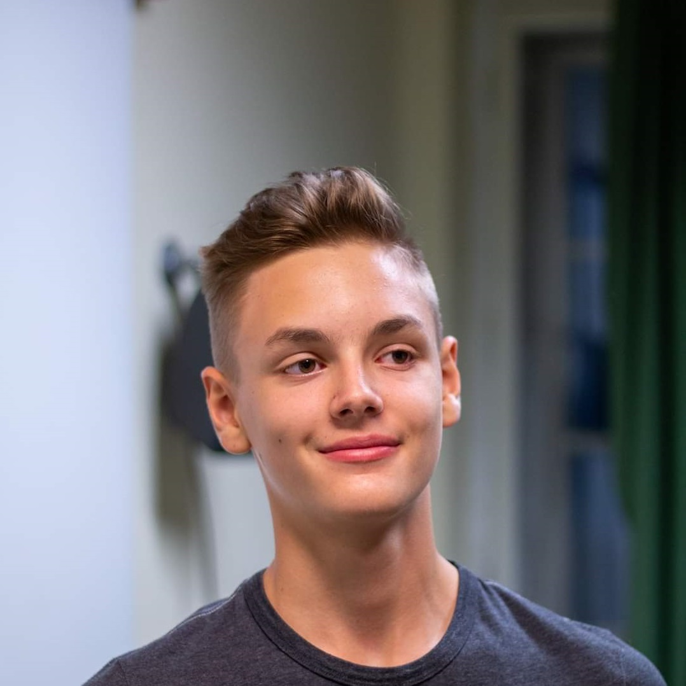
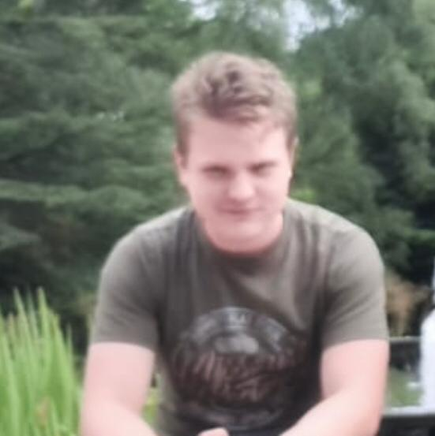
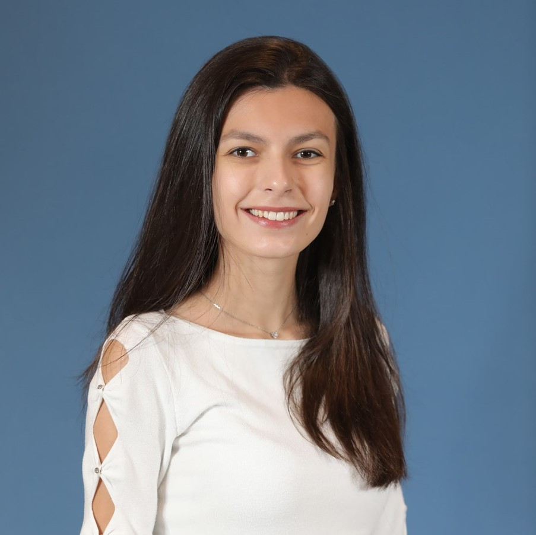
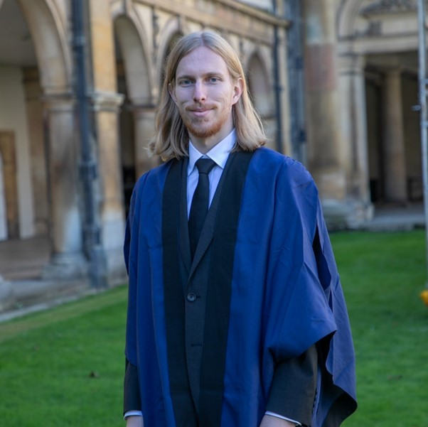

Our organising team is made up of enthusiastic volunteers who are
dedicated to the cause of creating opportunities for the youth to
get to know the field of computer science. Many organsiers are
tutoring students or are taking part in talent development as a
hobby beside their career in computer science.
We believe that today's mainstream methods of education are not
suitable for portraying computer science as an interesting and fun
field, which is why we want to use our decades of experience in
teaching to popularize new ways of approaching informatics.
This challenge is one step in that direction. Our contestants will
experience that the problems that arise in the life of a
programmer can be fun and enjoyable.
Agoston Weisz
Main Event Organiser
I am Weisz Agoston, a Senior Software Engineer at Google in
Zurich.
I have spent my high-school years at the Fazekas Mihály
Primary and Secondary Grammar School of Budapest, in a
mathematics-focused class, from where I have gone to ELTE for
a research MSc in mathematics. Középiskolás tanulmányaimat a
Budapesti Fazekas Mihály Gyakorló Általános Iskola és I have
won a bronze medal at the International Olympiad in
Informatics, got first place at the Sapientia international
informatics olympiad, and got third place twice on the
KPI-open international team contest. Since 2013, I have
received an award from the prime minister every year for my
successful teaching - I have had at least one student on the
international olympiads every year.
I am dedicated to providing the best possible education to as
many people as I can.
In my free time, I cycle, ski and play football in the Google
Zurich football team.
Nora Szoke
Main Event Organiser and Back-End Developer
I am Nora Szoke, mathematician and web developer. Mathematics
has been my passion ever since my childhood, I have
succesfully participated in a lot of contests as a high
schooler. I had obtained my Érettségi at the special
mathematics class of the Fazekas Mihály Primary and Secondary
Grammar School of Budapest, after which I continued my studies
as a mathematician at ELTE, with a PhD at abstract algebra on
the Polytechnique Fédérale de Lausanne university in École,
Switzerland. After a couple of years, I have abandoned
research to pursue a career in web development in France.
Besides mathematics, I have always been very interested in
teaching and nurturing talent. I have taken part in organizing
the Medve Outdoors Mathematics Competition in Hungary every
year since 2008. As one of the founding members of the A
Matematika Összeköt Egyesület in Hungary, I have been teaching
interested students mathematics for more than a decade.
As a hobby, I read a lot about biology and psychology, and do
a lot of exercise: my favourite sports are hiking, wakeboard,
wall climbing and pole sports.
Kornel Szabo
Main Event Organiser and Front-End Developer
I'm Kornel Szabo, a computer science student at the University
of Cambridge.
I have spent my high school years at the special mathematics
class of the Fazekas Mihály Primary and Secondary Grammar
School. I have already done a lot of mathematics and
competitive programming in these years, which has allowed me
to get bronze medals at the International Olympiad in
Informatics, the International Mathematical Olympiad, the
Central-European Olympiad in Informatics and a silver medal at
the Middle-European Olympiad in Mathematics.
I was also successful in Hungarian competitions, I came second
in the Hungarian Olympiad in Informatics, and 10th on the
Hungarian Olympiad in Mathematics. In my final year at high
school, I started teaching in Alphacademy, where we teach
programming for hundreds of students. I have already had some
experience by that point, as I had already helped with
organising Pósa-camps as a high schooler.
My hobbies include running, cycling, hiking, wall climbing and
reading about economics, philosophy and history.

Zsombor Horvath
Backend Developer
My name is Zsombor Horvath, I am a web developer and a junior
student at Fazekas High School in Budapest.
Besides my school studies, I have been learning to code for a
long time in a self-taught way. I work for an ed-tech company
called Redmenta as a software engineer. Furthermore, I teach
C++ programming language and algorithms to students in
Alphacademy. Thanks to my American connections, I managed to
spend a semester in the United States, where besides
establishing new connections, I could improve my language
skills as well. With the help of my friend, we won 3rd prize
in the Hungarian Innovation Competition with our study about
decentralized logistics systems.
I am also an active participant in various hackathons, which
are usually held offline. My other hobbies include studying
artificial intelligence, reading, and going to the gym.

Will Pinkerton
Event Organiser
Hello! I'm Will, a computer science student at the University
of Cambridge. In the past I have performed in a few
hackathons, and attended various cybersecurity bootcamps. I
enjoy the problem-solving nature of computer science, and the
intricacies that come along with scaling solutions. My hobbies
include boxing, reading, and coding.
Jeriel Chua
Leader of Team Singapore
Hi! I’m Jeriel, a linguistics undergraduate student at the
University of Cambridge. I enjoy thinking about the structure
and organisation of English and other languages. To me, there
are many parallels in the ways linguists go about thinking
about the syntax (grammar) of natural languages and the ways
programmers issue computers instructions through the medium of
code — which is in many ways a language of its own. My
pastimes include constructing linguistic diagrams, teaching,
keeping fit, and spending time outdoors — walking about zoos
and gardens.
Woo Jia Hao
Member of Team Singapore
Hello! I am Jia Hao. I started my journey in software at 15
and have been a part of different projects — from developing
gesture-based accessibility frameworks in Android to
conducting research in Natural Language Processing (NLP)! I
also talk about software and open-source on my blog and create
guides to help developers lay their foundations in various
areas like Android development and version control. In my
downtime, I like going for jogs, watching Marvel shows, and
hanging out with my friends.
Chen Jia Wei
Member of Team Singapore
Hi, I'm Jia Wei, a first year Business Analytics student
studying in the National University of Singapore. I'm
relatively new to the field of computing and I'm currently
exploring the different areas of computing. Currently, I
aspire to work in financial or marketing analytics. My hobbies
are astronomy, playing all sorts games and recreational sports
such as badminton.
Chen Guan Zhou
Member of Team Singapore
I'm Guanzhou, a computer science student at the National
University of Singapore. My journey in computer science has
been exciting thus far and I look forward to exploring more
domains in computer science. I love problem solving and
algorithmic thinking and I am particularly interested in
software engineering and quantitative finance fields. In my
free time, I enjoy playing chess and racket sports such as
badminton and squash
Alvin Jiang
Member of Team Singapore
Hello! I’m Alvin, a Year 1 student studying Computer Science
at National University of Singapore. In the past, I have
participated in a few Math Olympiad and Physics Olympiad
competitions, and really enjoyed trying to solve those tough
problems and feeling the rush of learning new techniques and
concepts. In computer science, these problems are much more
dynamic and interesting, which is why I am excited for this
opportunity to bring the joy of problem solving to kids! In my
free time, I like playing badminton, cycling and just being
outdoors.

Ellie Vitanova
Event Organiser
Hi! I’m Ellie, and I’m a second-year Computer Science
undergraduate at the University of Cambridge. I have always
had a very logical approach to life, which is why when my
high-school Informatics teacher told me my brain worked like a
computer, I knew I wanted to pursue computer science as a
career. I’m thoroughly enjoying my course and am currently on
the fence about whether I want to go into research or
industry. Only time will tell! I am an avid hiker and skier,
so I really love a good mountain, but you won’t hear me
complaining at the beach either!

Rokas Urbonas
Team Lead for Lithuania
Hello! My name is Rokas, and I am a computer science student
at the University of Cambridge. I have been a fan and a
frequent participant of mathematical and computer science
challenges since my early school years.
/ Contact us!
Do you have questions about Alphatron, or are you interested in
supporting our activities? Please get in touch via email or by
filling out the contact form below.